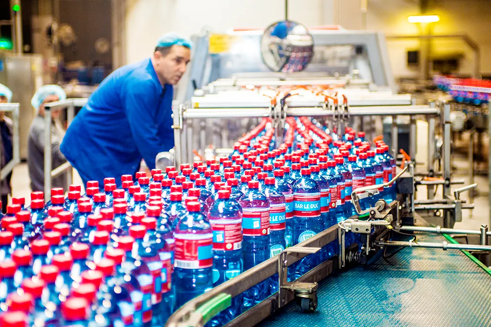

We hebben een geweldige tijd met jullie gehad op de festivals! Honger....
DORSTIG NAAR MEER
Kijk welk product het beste bij jou past, ontdek wie we zijn of vind ons op één van de vele festivals
ONZE PRODUCTEN
Kies het mineraalwater dat jij het liefst drinkt. Plat of bruisend? Met een smaakje of juist zonder? Precies wat jij nodig hebt.
BEKIJK ALLE PRODUCTEN100% NATUURLIJK MINERAALWATER
HET VERHAAL VAN BAR-LE-DUC
Kies het mineraalwater dat jij het liefst drinkt. Plat of bruisend? Met een smaakje of juist zonder? Precies wat jij nodig hebt.
ONS VERHAAL

100% NATUURLIJK MINERAALWATER
INSPIRATIE & TIPS
Nieuwsgierig naar de bruisende wereld van Bar-le-Duc? Lees er hier alles over.
 Festival
Festival kalender 2024 – Bar le Duc
Festival
Festival kalender 2024 – Bar le Duc
Dit festival seizoen is Bar-le-Duc weer aanwezig op verschillende plekken.....
1. Le Duc Classic Ingrediënten 100 ml wodka (14.8%) 3 munt blaadjes....
WIN DORSTIGE PRIJZEN
DE WINACTIE IS BEGONNEN
VEEL GESTELDE VRAGEN
Wij hebben antwoorden.
Bar-le-Duc is zuiver mineraalwater, ontstaan uit de regen die circa 1200 jaar geleden op de Utrechtse heuvelrug is neergevallen. In deze tijd was er nog geen sprake van luchtvervuiling. Het water, dat nu op circa 150m diepte door vele kleilagen beschermd ligt, wordt rechtstreeks vanuit de bron gebotteld. Mineraalwater zoals dat ontspringt bij de bron mag verder maar een beperkt aantal handelingen ondergaan voordat het als natuurlijk mineraalwater in de handel mag worden gebracht. In grote lijnen komt het erop neer dat niets aan het water mag worden toegevoegd (behalve koolzuurgas) en dat uitsluitend door beluchten en filtreren stoffen als ijzer en mangaan mogen worden verwijderd. Deze stoffen geven een ongewenste smaak en kleur aan het water. Dit passen wij ook toe bij het Bar-le-Duc water: eerst wordt het water belucht met steriele lucht. Mangaan en ijzer uit het water worden daardoor omgezet in mangaanoxide en ijzeroxide. Deze stoffen worden vervolgens afgescheiden door het water te filtreren. Na deze behandeling is het water gereed om afgevuld te worden.
Bar-le-Duc is zuiver mineraalwater, ontstaan uit de regen die circa 1200 jaar geleden op de Utrechtse heuvelrug is neergevallen. Het water is langzaam in de bodem gezakt tot een diepte van circa 150m waar het wordt beschermd door een dikke kleilaag. Onderweg hebben de vele aardlagen het water gezuiverd en heeft het water de mineralen opgenomen. Dit water wordt hierna rechtstreeks vanuit de bron gebotteld. Het meest kenmerkende verschil tussen leidingwater en mineraalwater is de constante samenstelling van het mineraalwater. Terwijl leidingwater steeds van samenstelling kan wisselen door het afwisselend gebruik van oppervlakte water en bronwater. Leidingwater mag zijn onderworpen aan allerlei bewerkingen, zoals behandelen met chloor of ozon, filteren met koolstof enz. Dit mag bij mineraalwater niet! Natuurlijk mineraalwater bevat geen enkele toevoeging en heeft geen enkele bewerking ondergaan, zoals filteren, chloriseren, ozoniseren. Het water uit de Bar-le-Duc bronnen is honderden jaren geleden als regen gevallen en heeft op zijn weg naar de bron derhalve het een en ander aan mineralen opgenomen. Het mineraalwater wordt voortdurend gecontroleerd op zijn originele samenstelling, zoals die was bij het erkennen van de bron.
In natuurlijk mineraalwater, zoals Bar-le-Duc, zitten van nature diverse mineralen. De afkortingen die op de verpakking staan vermeld, staan voor deze mineralen, uitgedrukt in miligram per L water. Ca: Calcium Mg: Magnesium Na: Natrium K: Kalium F: Fluor Cl: Chloride SO4: Sulfaat HCO3: Waterstofcarbonaat NO3: Nitraat
Bar-le-Duc water is van nature natriumarm, waardoor het inderdaad zeer geschikt is voor de aanmaak van babyvoeding.
Bij Bar-le-Duc zijn we druk bezig met duurzaamheid. Zo zijn onze PET flessen al sinds 2015 gemaakt van 100% gerecycled materiaal. Ook proberen wij onze fabriek zo duurzaam mogelijk in te richten. Zo ligt ons hele dak ligt vol zonnenpanelen, en bevindt de bron zich recht boven de fabriek. Dit zorgt ervoor dat ons hele productie process een stuk efficienter is. Ook blijven wij werken aan onze samenwerking met stichting landschap erfgoed voor het behoudt van het landschap. Zo proberen wij met Bar-le-Duc ons steentje bij te dragen op gebied van duurzaamheid.
STAAT JOUW VRAAG ER NIET TUSSEN?
Wij helpen je graag. Stel je vraag via ons contactformulier.
NEEM CONTACT OP